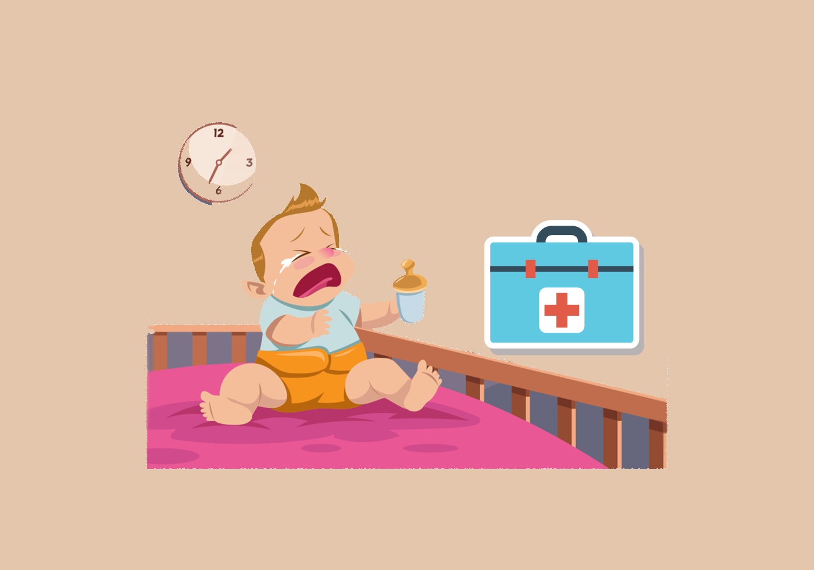

Botiquín del bebé
Publicado el 5 de junio,2019
Alguna vez has tenido una emergencia médica con tu bebé en plena madrugada y no supiste qué hacer? Para nuestros pequeños siempre es mejor que los llevemos al doctor cuando presentan inquietud porque se sienten enfermos pero también podemos ayudarnos si es que se nos presenta un caso no tan grave y que podemos controlar en casa con la ayuda de nuestro botiquín, pero... sabes qué debe haber en ese botiquín?
Si eres una mamá primeriza como yo, lo mas seguro es que no sepas qué incluir, es por eso que te dejo una lista de las cosas más importantes que contiene el mío y además lo mejor será que le preguntes al pediatra de tu bebé para que se adecúe a las necesidades de tu pequeñ@ y esté lo más completo posible.
A continuación te dejo una lista de los productos que contiene mi botiquín y para qué sirven. Recuerda que debes saber las cantidades que debes administrar a tu pequeñ@ y eso lo debes preguntar al médico, pero si tienes una emergencia puedes comunicarte con el pediatra y de esta forma ya cuentas con el medicamento en casa, por lo que si es algo no tan grave podrás remediarlo de inmmediato y no tendrás que esperar a conseguir el medicamento.
- Óxido de zinc
- Paracetamol
- Loratadina
Es un emoliente protector y astringente cutáneo. Está indicado en quemaduras leves, raspones, sedante del ardor y rozadura por pañal
Recuerda que debe ser pediátrico o infantil según la edad del pequeñ@, se utiliza para ayudar a reducir molestias, dolores, dolor de garganta y fiebre en niños con resfriados o influenza. Alivia el dolor de cabeza o el dolor de muelas. También se puede utilizar para disminuir la fiebre del bebé después de una etapa de vacunación.
Sirve para aliviar algunas alergias y síntomas como estornudos, secreción nasal, y picazón en los ojos, nariz y garganta.
Otro consejo que te doy es que revises constantemente la caducidad de los productos para que siempre esté disponible y en buen estado, además de nunca automedicar a tu hij@, la idea solo es disminuir tiempos pero siempre orientados por el experto.
Espero que te funcionen estos tips y cuéntame si tú tienes algun otro producto que te haya salvado en alguna emergencia.
Bienvenido a Moments con M de mamá

Gracias por leer este blog, creado por Mariana Pacheco con el fin de hacer la vida familiar más divertida, compartir tips para padres, actividades familiares divertidas, ideas de comida y estilo de vida de las mujeres entre otras cosas.
Sígueme